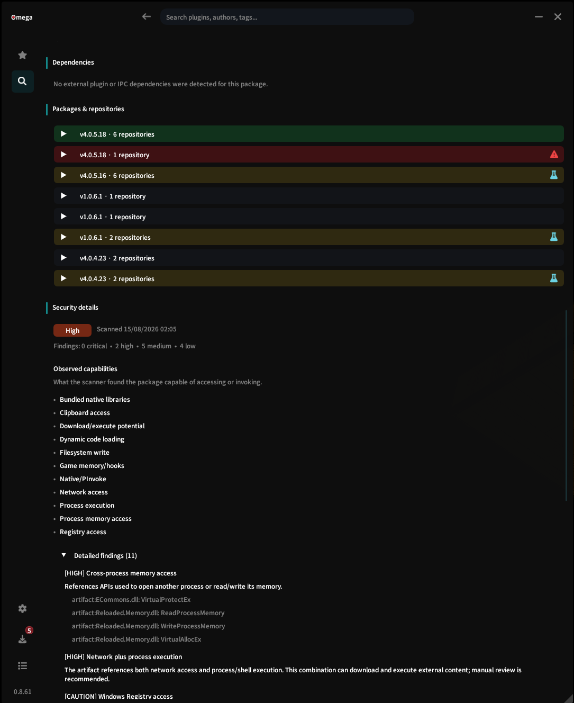

Capabilities
What can it reach?
Network access, filesystem paths, native interop, process APIs, game hooks, IPC, reflection, and automation are all useful context.
Omega security record
A plugin name and screenshot only tell part of the story. Omega pulls together the public record - code, endpoints, dependencies, versions, and scanner findings - so you can have a proper look before adding it to your game.
No models, LLMs, or AI verdicts are used in the scanner. Toni remains a very enthusiastic observer of data.
A security record, not a verdict
Useful plugins can use powerful APIs. The important question is whether a capability makes sense for the plugin you are considering, and whether the public evidence gives you enough confidence to install it.
Capabilities
Network access, filesystem paths, native interop, process APIs, game hooks, IPC, reflection, and automation are all useful context.
Evidence
A finding can carry the observed API, dependency, path, endpoint, or other bounded evidence behind the signal.
Limits
A static scan cannot prove every runtime behavior, and a public source repository does not prove that it built a distributed binary.
Run the trial
The online pipeline inspects public artifacts as data. It does not load or execute the plugin while scanning it.
Omega reads package structure, .NET metadata, managed code where available, and public source text to identify security-relevant APIs and behavior markers.
Known and unknown endpoints, network usage, and filesystem paths outside the expected FFXIV locations become reviewable context.
Managed modules and plugin dependencies are recorded and checked against known public security advisories where a reliable match is available.
Omega tracks sources, hashes, and versions over time. Differing packages for the same plugin and version are a useful signal worth seeing.
How the rating works
Omega currently reflects the highest-severity finding for a package: Informational, Caution, High, or Critical. It is separate from confidence and repository trust.
High risk does not mean malicious. It means the observed capability or finding can cause more harm if it is misused, compromised, or implemented incorrectly.
The honest limit
No finding does not mean safe. Public source does not prove a binary was built from it. A trustworthy repository does not remove the need to understand what a plugin can do.
That is why Omega keeps the evidence visible and leaves the familiar install, update, disable, and removal lifecycle with Dalamud.
Risk disclosure
Third-party plugins can access data available to the game process and resources available to the Windows user running it. They can also put an FFXIV account at risk, especially where gameplay is automated.
Discoverability in Omega is not endorsement or a security certification.
The record in game
This is the part a coloured badge cannot do. Omega keeps the detected capabilities, severity summary, package versions, repositories, and detailed evidence together so you can inspect the reason behind a signal.
A high-risk label is not an accusation. It is a reason to take a closer look at what the plugin is capable of doing.
